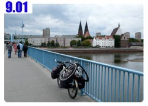
睡在休息站的免費小茅屋真是一件神奇的事情，打開電腦存照片的時候，居然還有網路可以用。
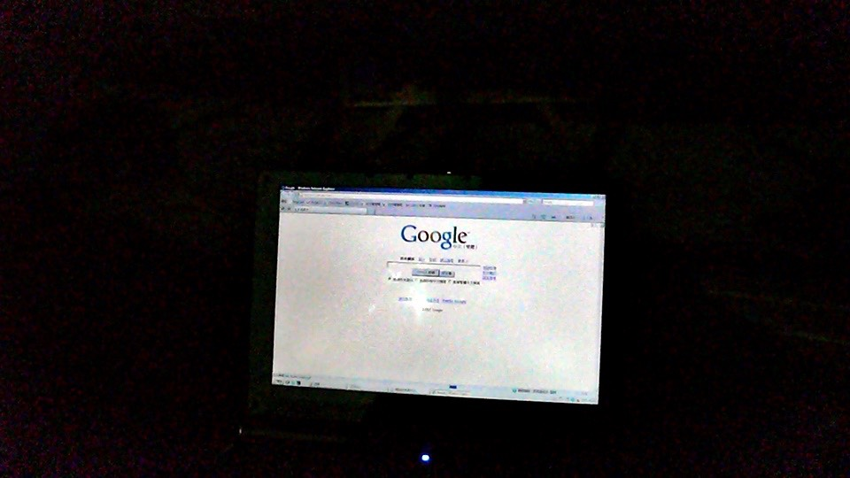
連這樣的地方都可以輕鬆找到無線網路訊號，而且還是免費的，訊號大概是從餐廳那邊過來的。
看著輕而易舉就到手的網路服務，比照之前在哈薩克跟俄羅斯尋找網路的窘態，歐洲真的到了，網路可能比水龍頭還容易找到。
晚上睡在冷冰冰的地上，早上六點半就爬起來，天氣變得越來越冷，全身顫抖地穿上保暖衣物。
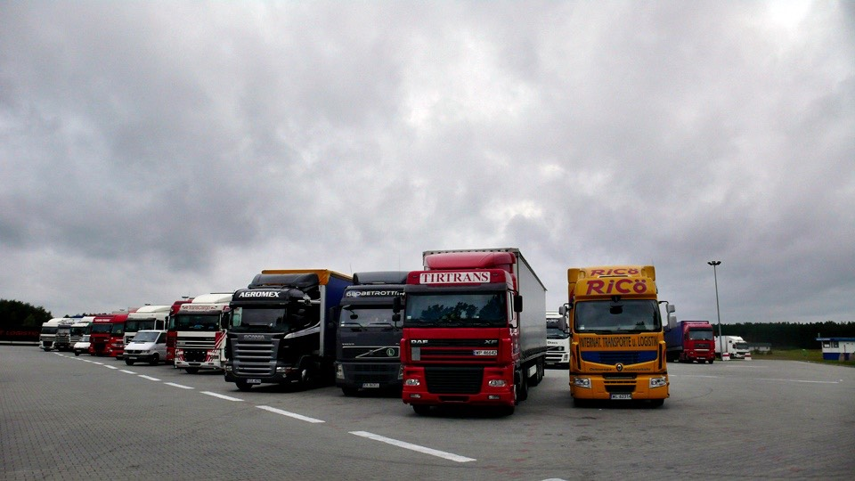
天已經亮了，但還是沒看到太陽的影子，好在也沒有下雨的跡象，停車場停滿了穿越兩國運送貨物的大卡車，等一下也要換我去通關了。
出發之前先到餐廳去報到，洗把臉，找張舒服的椅子坐下來，沒有點任何食物或飲料。
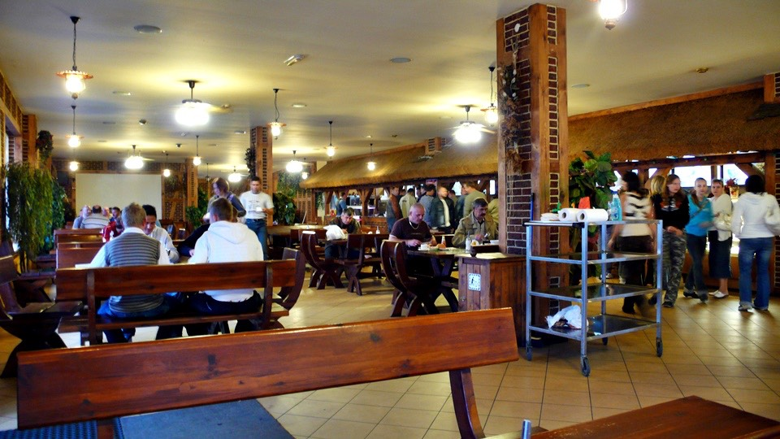
早上還不到七點生意就好得驚人，就這麼待在室內享受舒適的暖氣，整理昨天的遊記，接下來幾天都保持即時連載應該是沒問題的。
寫遊記的時候旁邊的窗戶就能看見小多，肚子有點餓，趕緊把遊記寫完就趕緊上路吧，待在餐廳越久，肚子叫的聲音越響亮。
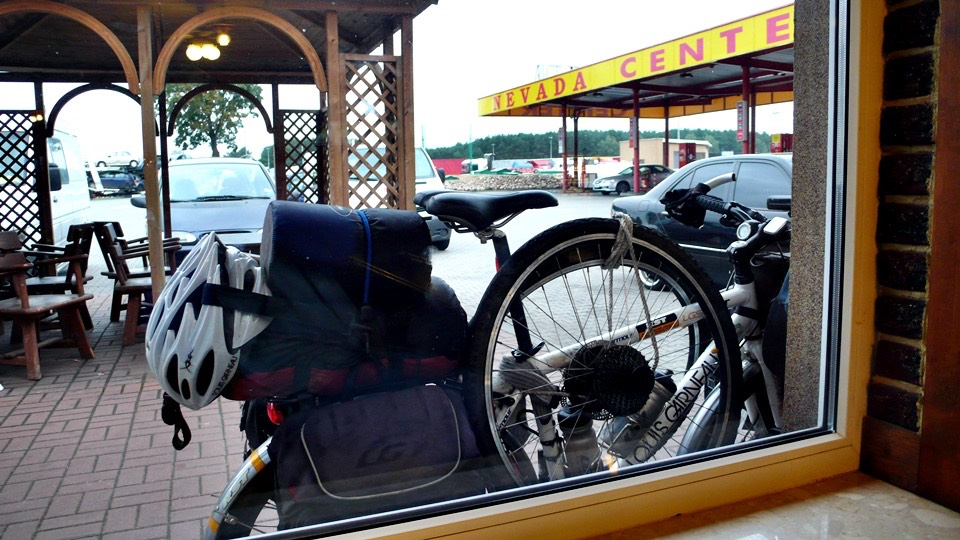
遊記寫完之後就用餐廳的網路直接上傳，即時連載的感覺還是很爽的，但就沒有稿費可以領了。~_~
目前距離邊境大概四十公里出頭，九點多出發的時候，天氣跟一大早沒有任何差異。
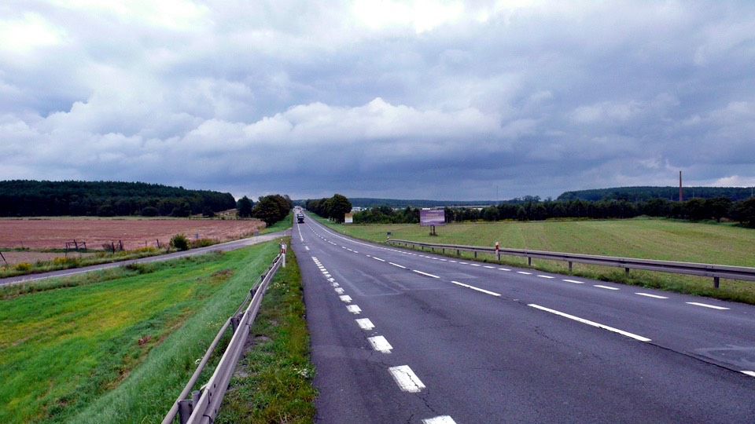
氣溫十六度，有點冷但還過得去，風勢依然是逆著吹，慢慢騎還是能夠往巴黎前進。
道路兩旁種的樹都是細細長長很高一根，看起來很像火柴棒，真擔心萬一燒起來該怎麼辦？
所以沿路都是森林嚴防火災的警告標語。
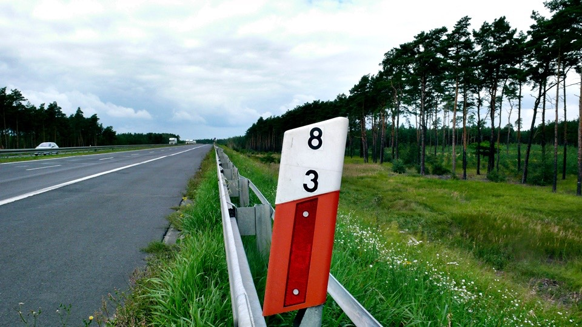
看到這個牌子的時候，邊境已經在眼前了，剩下最後三公里又八百公尺，德國～我來啦！
跟之前所有穿越的邊境一樣，有很多排隊通行的大卡車，在夾縫中求生存，往關卡前進。
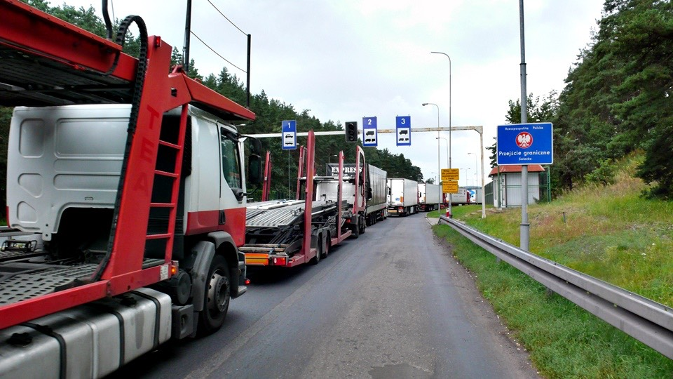
前面就是關卡了，很明顯地大卡車跟小轎車分道，那騎自行車該走哪一邊呢？

這個看起來平淡無奇，收費站規模的地方就是關卡，車輛幾乎在不停止的狀態下一輛一輛快速通行。
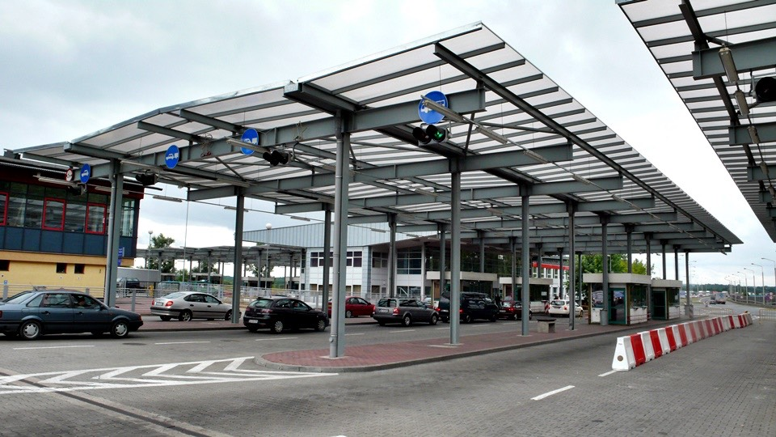
不用下車檢查行李或是證件，放行的效率高得驚人，站在這邊看著三分鐘，就被關卡的人員揮手叫過去。
問我想幹嘛？當然是要來通關的囉。
接著就告訴我，這邊禁止單車通行。
見鬼了～一路上也沒看到禁止的牌子，走到國境才跟我說單車過不去？
關卡人員說往回走四公里，左轉進入一個城鎮，自行車要從那邊才能夠通關，這邊是車輛專用的關卡。

碰了一個軟釘子，剛才走的是紅色二號道路，並沒有標示單車不能走，海關人員叫我走的紅色二十九號，反而標誌著汽車專用道。
這種烏龍標示牌見多了，不以為意照樣給它走，不然也不知道該怎麼通關進入德國。
往前騎一段路就進入城鎮，小鄉小鎮的道路不會太複雜，尋找往德國的告示牌，這時候已經快要中午了。
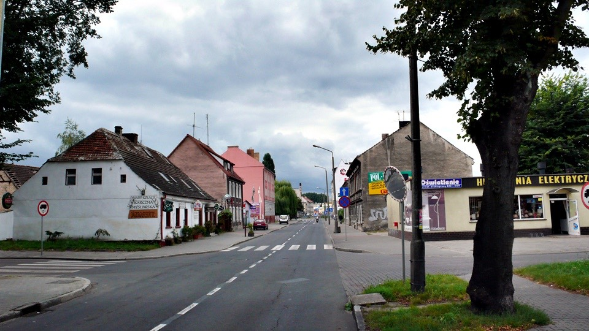
呀哈～左轉是吧，這個關卡就是往德國的入口了，騎小多要走這邊才有辦法入境。
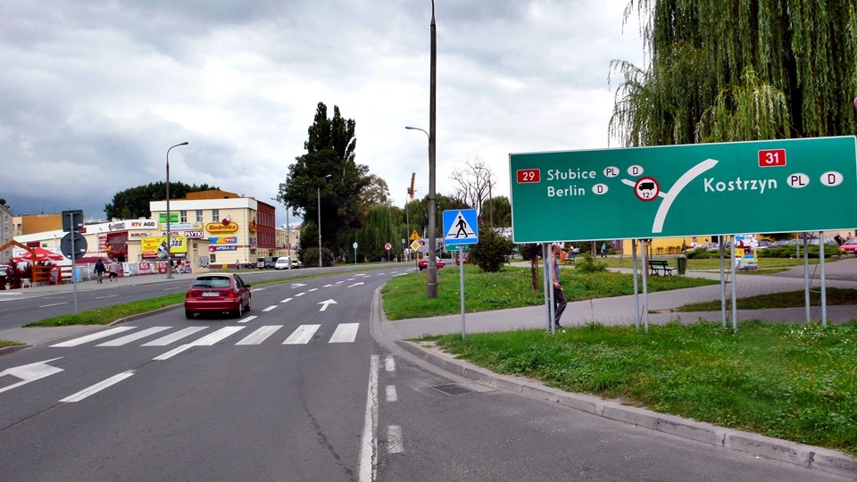
小鎮中有一大堆的兌幣處，茲羅提換成美金或是歐元的最後機會在這邊。
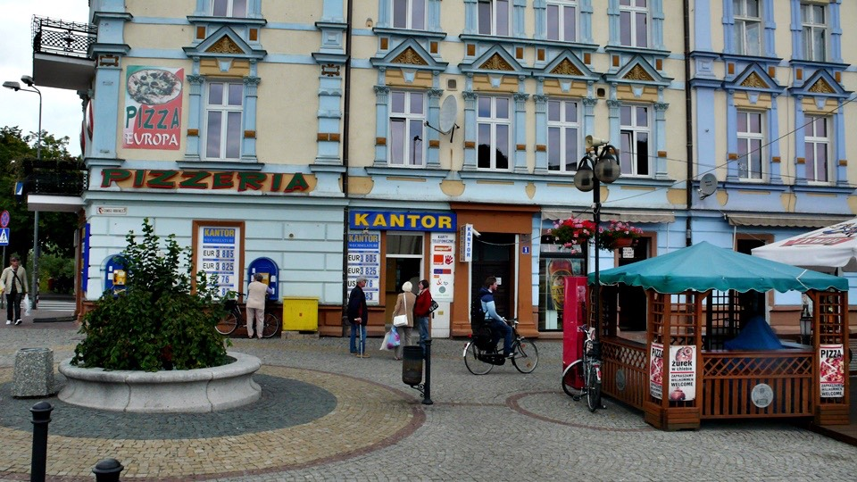
掂掂身上的錢，還剩下不到十五元，拿去換歐元也換不到幾塊錢，不如就在波蘭的邊境全部花光光。
買什麼都無所謂，可以方便帶著走，好吃又有營養的就可以了。
只是這邊突然又找不到商店，看起來是商店的店面賣的都是香菸或是菸草。
找了一個小朋友顧店的露天蔬果攤，我將手上的錢全部一股腦放在她手上，跟她說我要換成番茄跟蘋果。
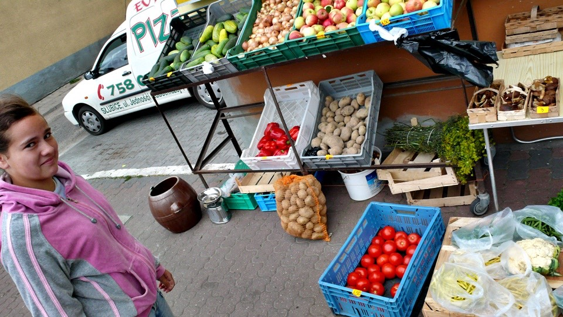
因為沒多少錢，所以就全部都交出去，結果這一點錢居然買了兩大袋的番茄跟蘋果。
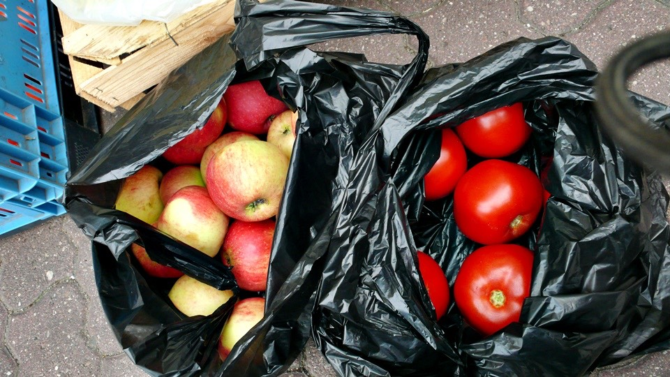
尤其是蘋果，整整二十四顆，拎著兩個大袋子根本不知道要塞在行李的什麼地方，所以就掛在單車的手把搖搖晃晃地帶著走。
連接波蘭跟德國的是一座橋樑，交通還蠻堵塞的，所以輕鬆地就找到該往哪邊走。
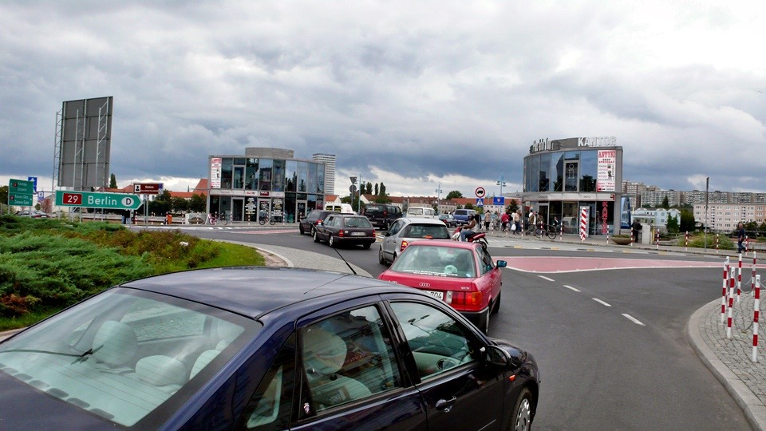
一條蠻寬的河，汽車川流不息來往，橋上還有很多單車騎士跟步行的路人，這個關卡才是我要走的地方。
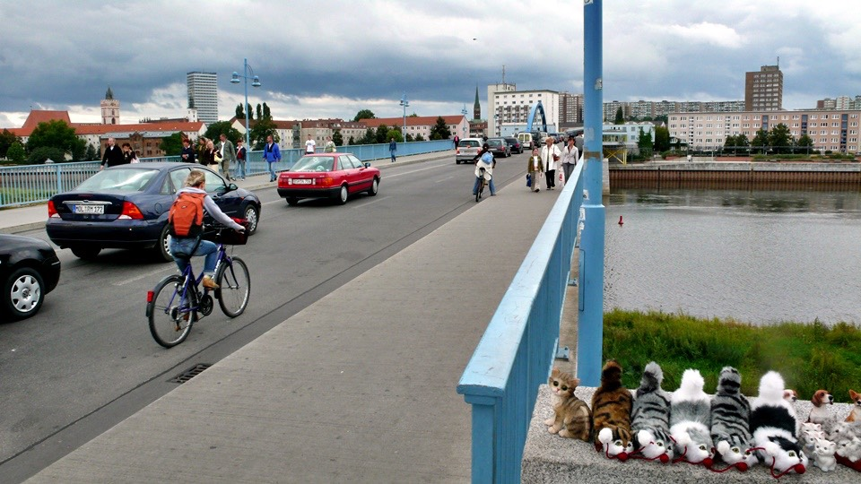
隔著一條河，一邊是波蘭另外一邊則是德國，對岸就是另外一個國家的感覺真是非常奇妙。
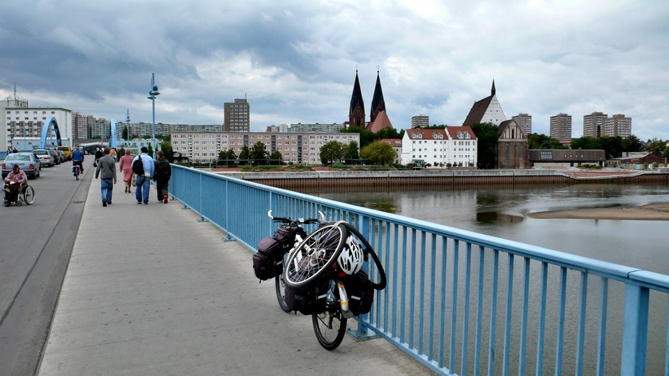
住在邊境的人天天都可以出國，想出國幾次都可以，連飛機都不用搭，用腳走就可以了
牽著小多跟著走在人行道上，前面等著的關卡不知道是怎麼樣呢？
河的另一邊，德國，這個國家也是第一次來拜訪，滿心雀躍等著通關。
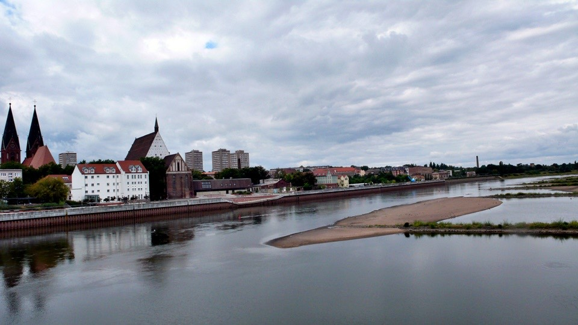
車輛看起來雖然有點多，但其實消化的速度非常快，幾乎沒有停頓，車流緩慢地不斷向前行駛，通關的步調感覺很順暢。
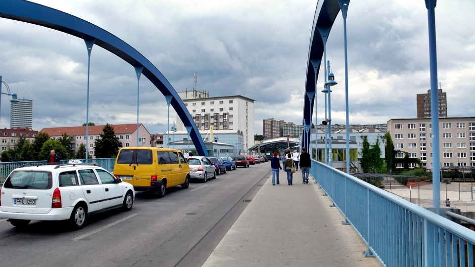
人行道走著走著就變成這樣，步行的人進入建築物通關，自行車則是沒辦法，跟汽車一起走吧。
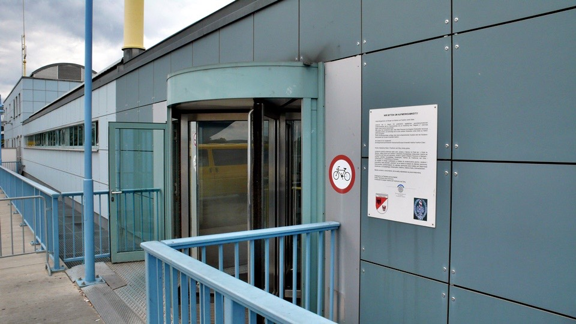
關卡的設計非常簡單，兩人一組的崗哨，一個是波蘭的人、另一個則是德國的人。
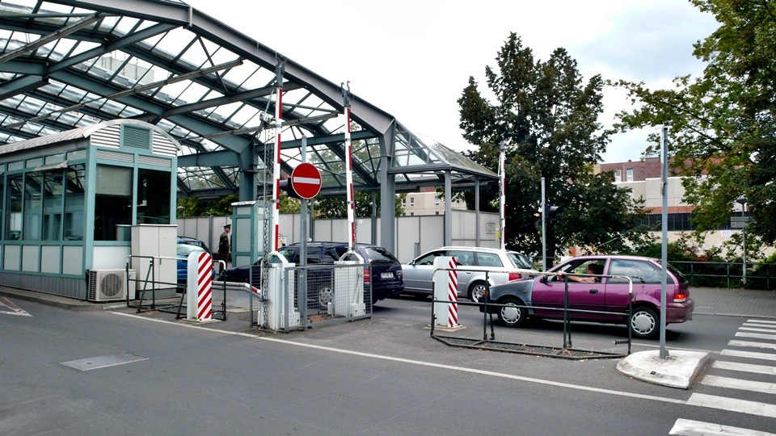
從白俄羅斯進入波蘭的時候，被波蘭關卡人員囉嗦扯了一個小時，對波蘭海關的印象不是很好。
從波蘭出境的時候真擔心一亮出台灣護照又要囉嗦半天。
將護照交到波蘭海關的手上，花三十秒檢查護照跟簽證的真偽，毫不囉嗦馬上蓋上出境章，然後將護照傳給德國海關。
德國海關更酷，什麼也沒有問、行李也完全不用檢查，十秒內就蓋上了入境章。
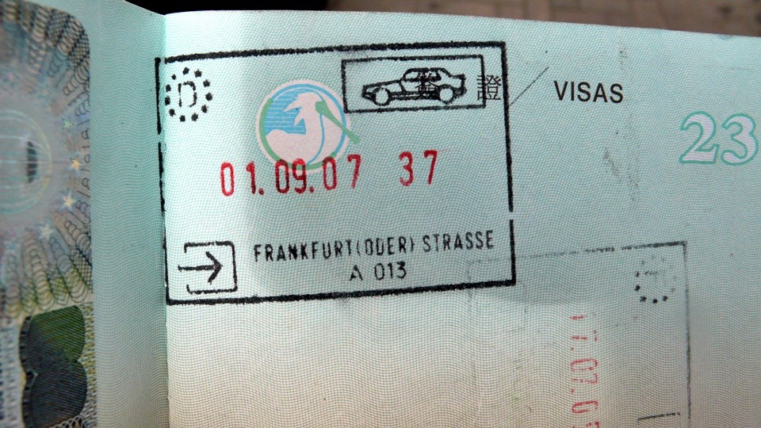
整個出入境的手續在一分鐘之內就搞定了，護照交回手上的時候，腦袋還沒反應過來，嘴巴倒是張得開開，真是神速的通關手續。
早上在紅色二號道路的關卡，海關人員說禁止通行，感覺有點不爽，結果從這邊輕輕鬆鬆完成通關，心情為之大好！
過了橋就是德國了，耳邊響起的是另一種語言，相當陌生，這時候才發現自己還沒有學會基本的德語。
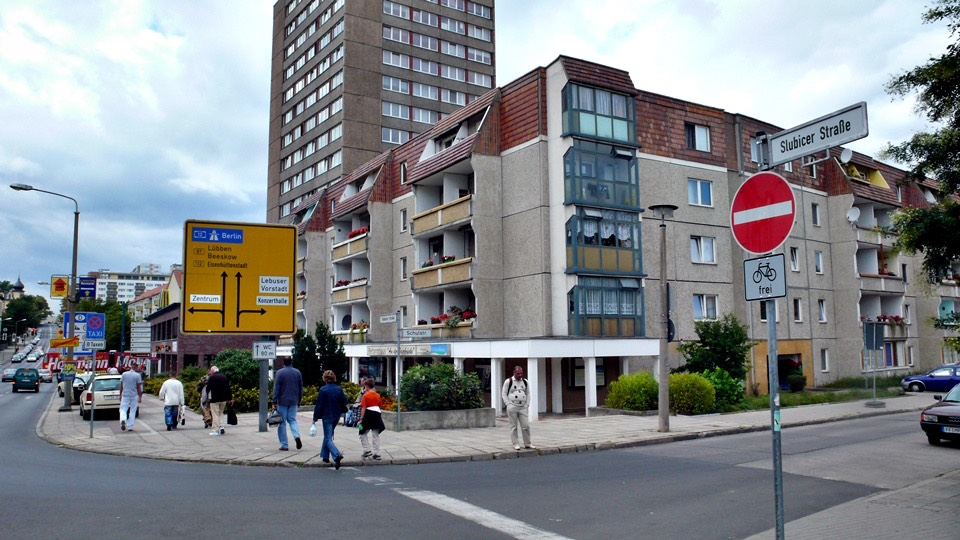
只好暫時當半個啞巴，找機會再將德語給惡補起來。
僅僅隔了一座橋樑，德國跟波蘭在邊境的差異還是很明顯的，路上掛的交通指示牌也不一樣了，這邊很有漫畫風格。
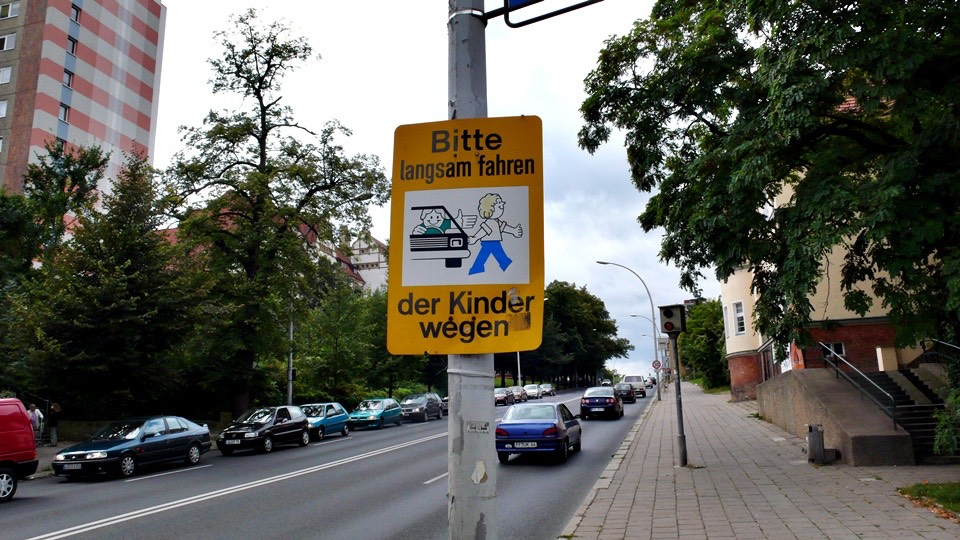
一入境就是大上坡，回頭一看則是等著入境波蘭的車潮，接下來德國進入法國的通關手續也不用煩惱會太難搞。
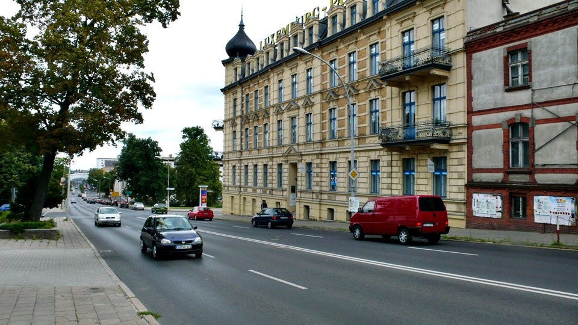
輕鬆入境之後接著就要開始找路大作戰了，最後一刻還是決定不買德國的地圖。
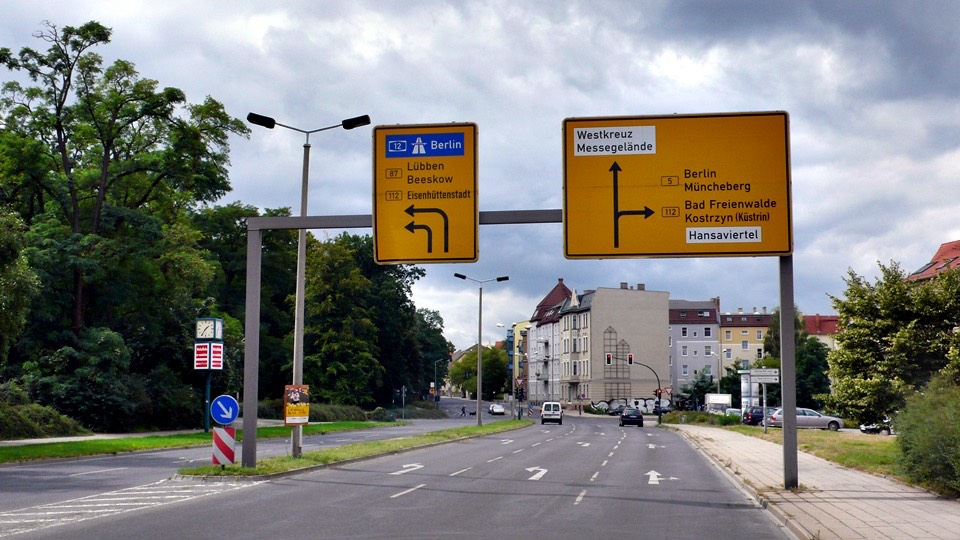
唯一的參考資料就是用Google Earth所研究出來的路線，當時將會經過的主要城鎮跟道路都寫在筆記本上。
雖然入境的地方跟當初規劃的地方不一樣，但只要找到正確的路接回去，就沒有太大的問題。
接下來就看德國對於自行車道路規劃得友不友善了，少一點禁止自行車，多一點自行車專用道吧。
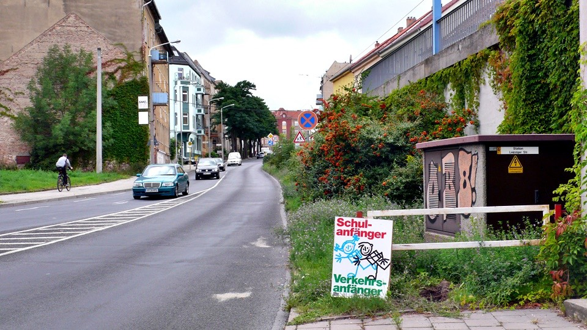
德國也是規劃成車道分離的模式，有自行車專用道的部分都會跟汽車道有一段距離，甚至隔半座森林都很常見。
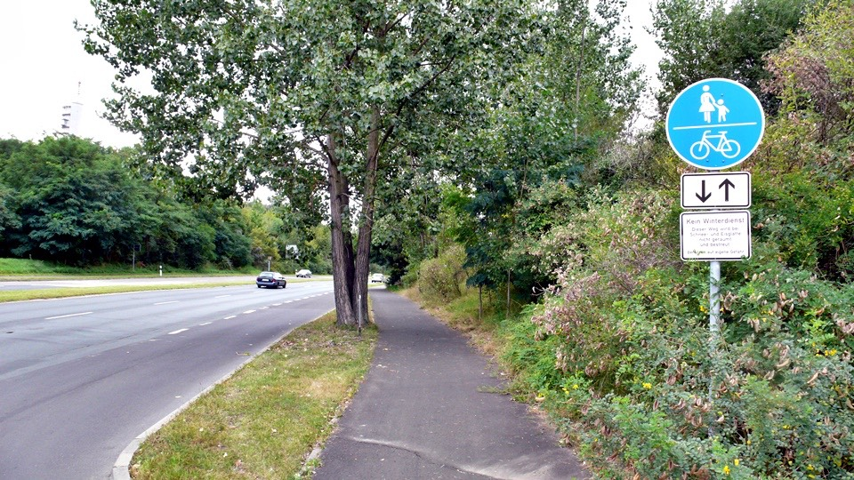
基本上自行車專用道跟汽車道是平行而走，現在只要一路沿著黃色八十七號就可以穿越半個德國，然後再想辦法。
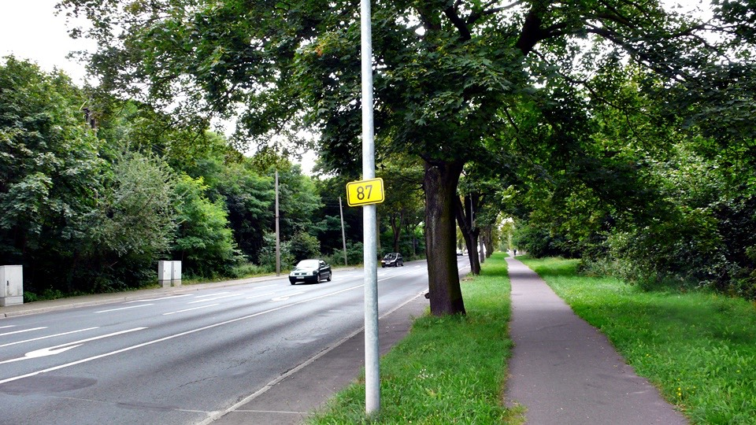
騎在自行車專用道會看不見道路告示牌，這時候就會很想騎上汽車道，但不用冒這個危險，安心跟著自行車道走，不會擔心騎到荒郊野外去。
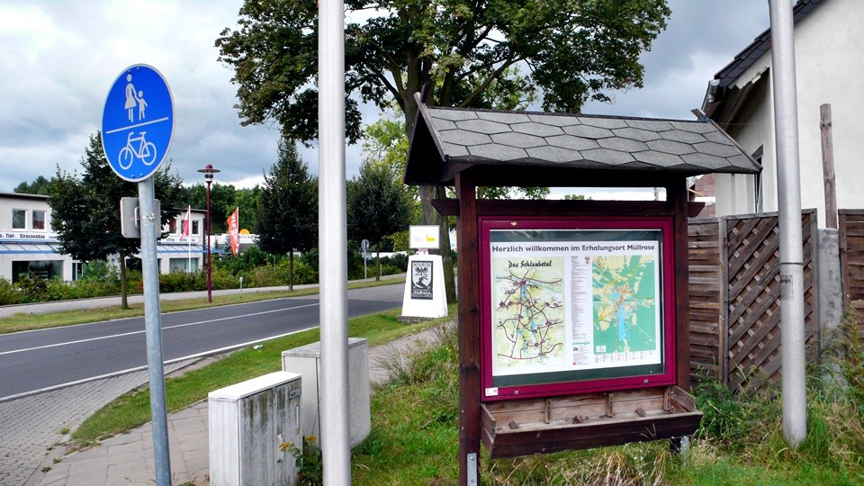
沒有買德國的地圖，但只要進入城鎮就會有很多地圖，比例尺超大，只有這一區域的範圍，標示出所有的景點跟道路。
拿來當成短程規劃還堪用，長程的距離還是得看道路指示牌。
從進入德國開始就往西南方騎，避開柏林直接往法蘭克福的方向走。
城鎮的入口告示牌變得很漂亮，有點規模的城鎮不會只放一個藍底白字的普通告示牌，大多都是很有設計感的石雕。
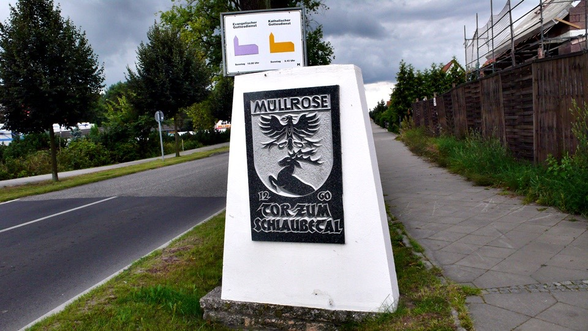
告示牌居然沒有標示法蘭克福的方向，還好已經將會經過的城鎮都寫在筆記本中，一路跟著走就好了。
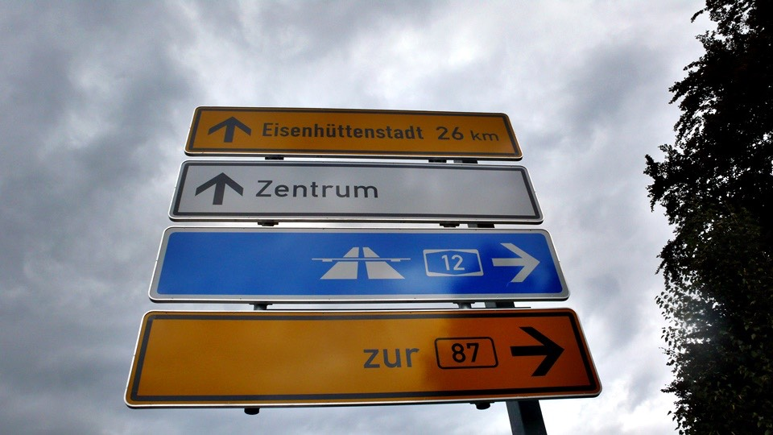
最高指導原則，黃色八十七號，騎著騎著就變成汽車專用道，頭很痛。
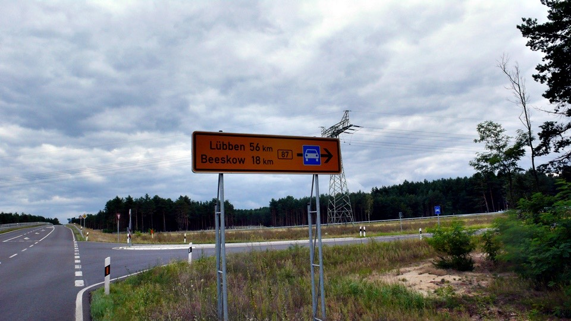
我很乖地沒有硬上，繞著小路去找替代道路，在小鎮的公車站中看見地圖，這一張的規模比較大，可以看見周遭的所有道路。
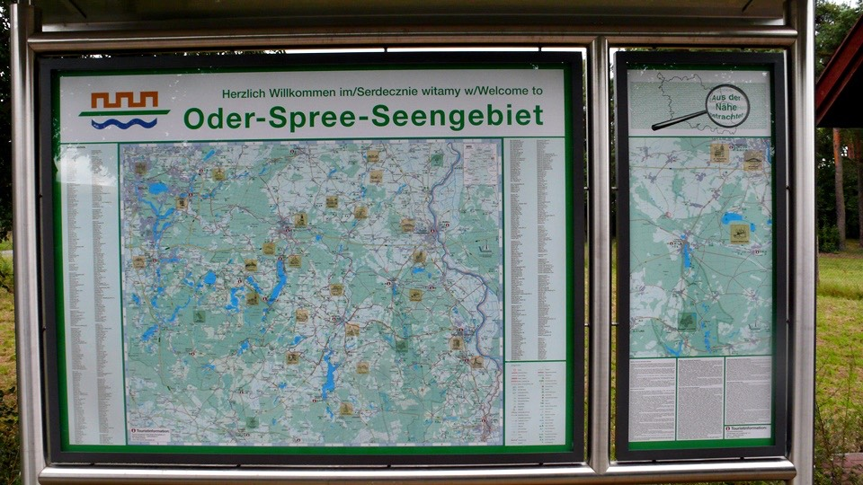
在這邊研究了很久，最後的結論是，沒有其它的替代道路能夠繼續往西南方走。
所以還是硬上了汽車專用道，順便感受一下德國汽車駕駛對於單車騎士的友好程度如何？
這些道路都沒有路肩，就是簡單的雙向道，我只能儘可能靠邊騎，後面要經過的車輛百分之百都會繞過我走。
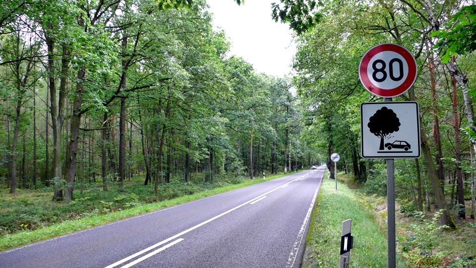
如果對向正好有車輛開過來的話，身後的駕駛就會減速在後面等，等對向車道空了，然後才繞一個大圈避開我。
感覺非常窩心，德國的駕駛習慣很好，今天也揮了很多手表示謝意。
枯萎的向日葵，種了很多，這些都是休耕的田地種來當肥料用的，之後會直接剷平在田裡當成肥料用。
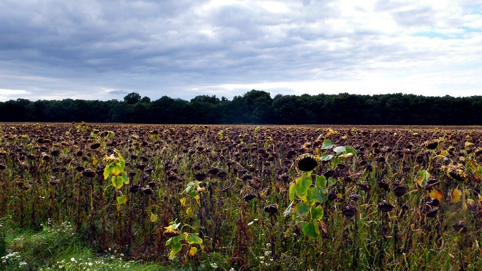
沒有休耕的田種的都是整片的玉米，小麥則已經收割完畢了。
這個告示牌很有趣，剛才硬上的黃色八十七號道路，在這邊就變成不是汽車專用道。
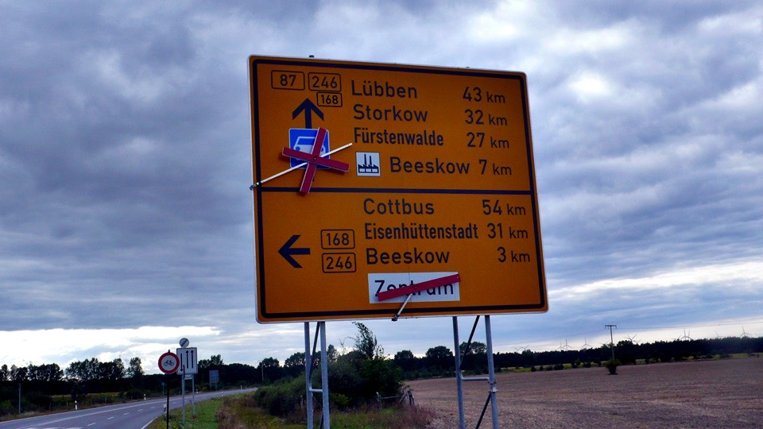
其實它本來的規劃是汽車專用道，但後來改掉了，就在原本的告示牌上加上一個紅色的叉叉，繼續往前騎吧～
結果前面十公尺就是禁行自行車的告示牌，當場臉上三條線 =.=|||
這一路上可以看到好多騎自行車的人在蹓躂，正好有兩個人也騎到這個路口，他們左轉進城，我就跟他們一起走，反正一定有路可以繞過這一段。
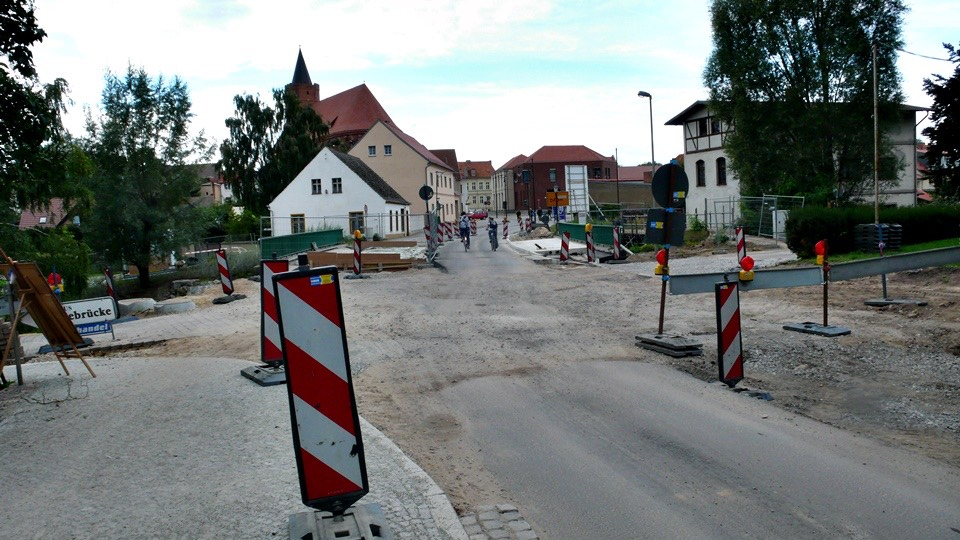
雖然稍微崎嶇了一點，還是可以走呀～穿過這座城市，離今天的目的地就不遠了。
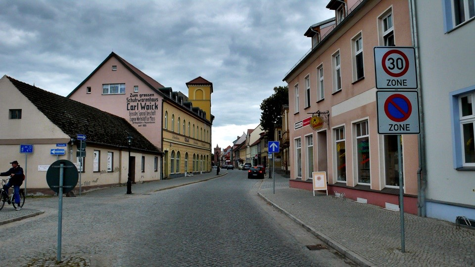
每天的目的地都是當天睡醒之後才會決定，依照當日的天候跟體能來決定要騎多遠。
鎮上掛了好多小丑的紙板，是馬戲團要來表演嗎？這個小丑看起來還蠻恐怖的。
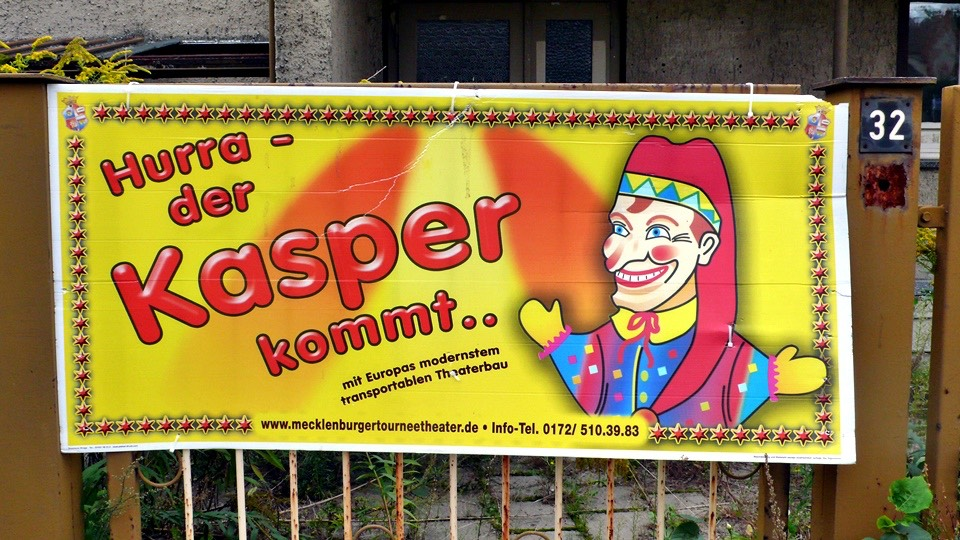
騎在一般道路上的時候，眼光只要搜尋一下，有很高的機會可以發現自行車專用道。
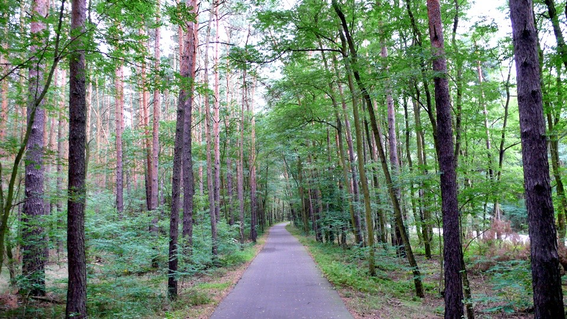
自行車道規劃得超有氣氛，沿著樹林而走的路，跟汽車完全分道，不時會遇見自行車騎士。
今天聽到新的加油方式，舉著大拇指跟我說『Respect！』
這已經超越加油的意思，而是到了表示敬意的程度，有點害羞地點頭回應，想說謝謝又不會講>"<
很懂得生活的德國人，能住在這麼漂亮的國家，真令人羨慕。
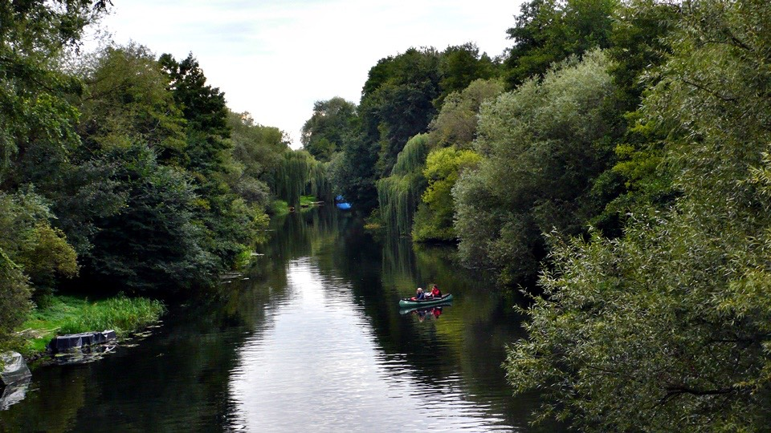
今天都沒有停在商店或是餐廳，因為身上沒有錢，茲羅提花光了，美金還不想拿出來換。
這一台是香菸販賣機，德國人很喜歡抽菸喔，在波蘭邊界有許多賣香菸的店，大概是因為一樣的煙在波蘭買比在德國買要便宜很多的緣故。
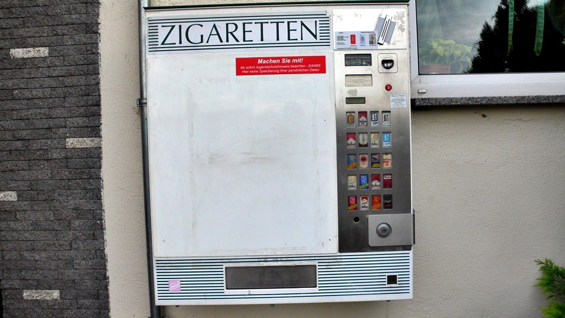
像是甜甜圈的雲，今天一整天都沒有下雨，但這樣的天空很難估計晚上會不會猛然地降下大雨，德國第一天的住宿該怎麼辦呢？
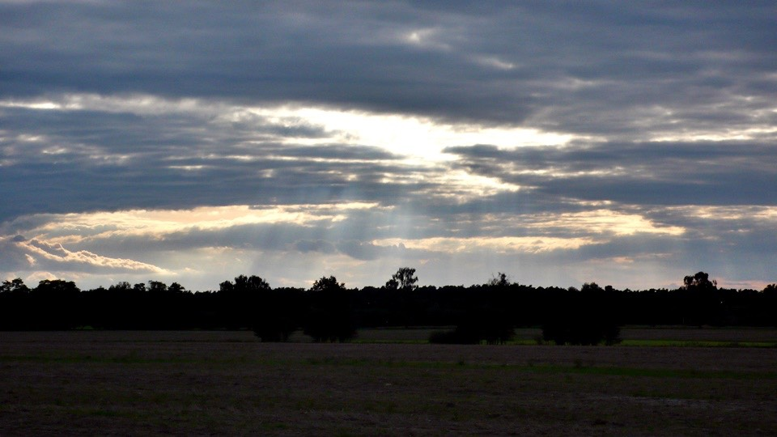
騎到一半突然緊急煞車，想起一件很重要的事情～我有歐元呀！
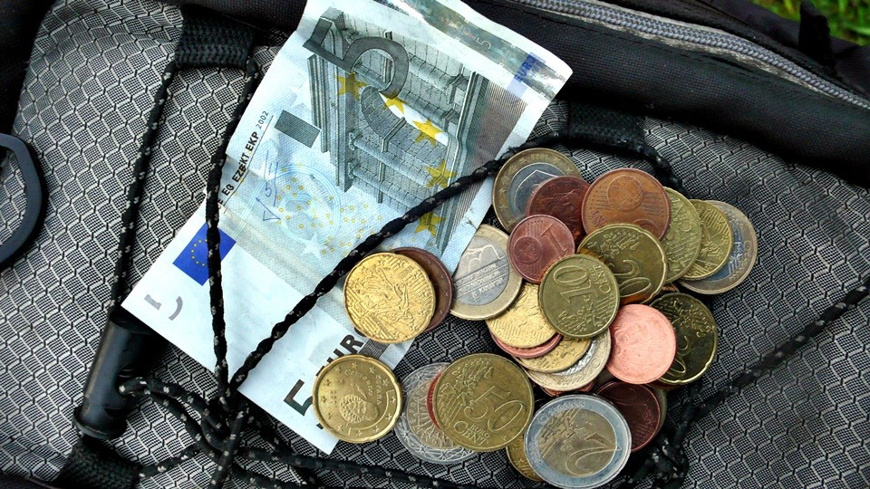
這些是兩年多前環法的時候花剩的，帶回台灣也因為太零頭了所以換不回台幣，米莎莎把這些零錢寄到莫斯科來，這次又有機會花光它們。
一堆硬幣配上唯一一張五元的紙鈔，清算的結果是二十一點八四歐元。
這是之前環法時半天的生活費，住不起正常的旅館，上餐廳的話大約兩餐就花完了。
腰包裡有錢的感覺真好，還是當地可以花的貨幣，心裡盤算著這些錢花十天的可能性有多少。
平均一天兩歐元，聽起來挺不錯的，騎車的時候眼光要銳利一點，要是能在路邊撿到歐元的話那感覺就很賺。
太陽一整天都躲在雲層後面，東南西北的方向搞不清楚，偶爾會拿出指南針，看見路標的時候就跟著騎。
八點出頭突然看見夕陽，有沒有搞錯？才這麼早太陽就下山？現在不是日光節約時間嗎？
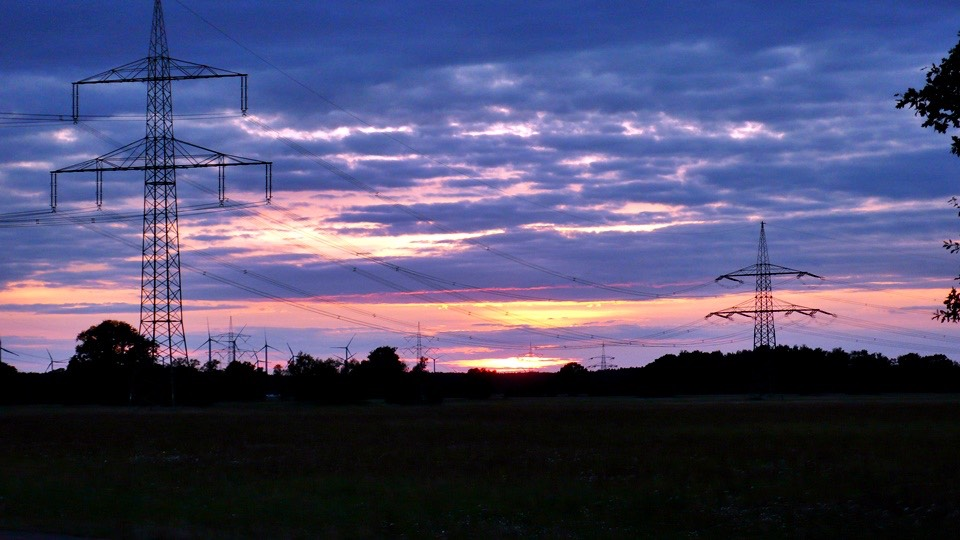
摸黑騎車不是個好主意，今天也該找地方落腳了，天空看起來下雨的機率很高
路邊有一間很大的郊區購物商場，大大的屋簷很適合睡一晚上，商場的隔壁則是汽車銷售中心。
在這幾個地方東繞西繞，評估睡那一邊會比較好。
希望可以找到有插頭的地方，不然有水龍頭也很好，更重要是睡到半夜不會被趕走的地方。
在山葉重型機車的銷售中心後面發現水龍頭，今天是星期六，銷售中心關門得早，明天不知道會不會開門營業？
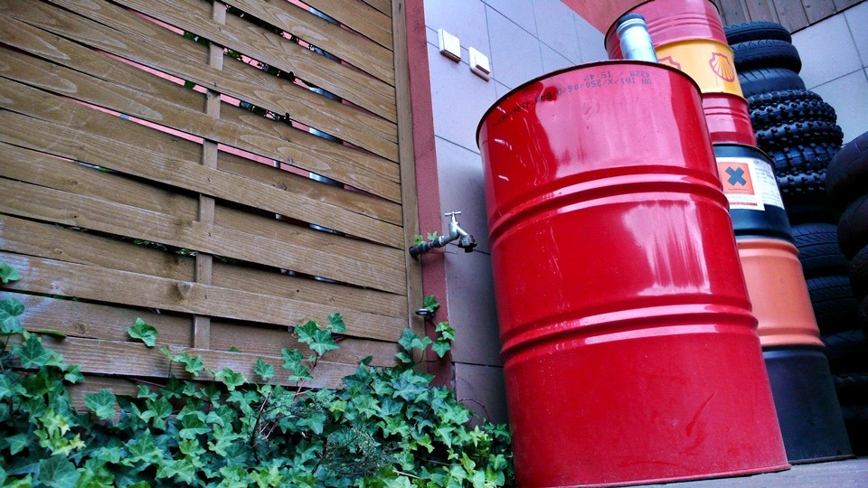
反正天一亮我就走，最晚不會拖過早上七點，這樣應該不會帶給別人麻煩吧？
先用水龍頭將身體擦洗乾淨，流出來的水是地下水，有奇怪的淺咖啡色，拿來喝可能會肚子痛得不能騎車，飲水的補充還得再找其它地方。
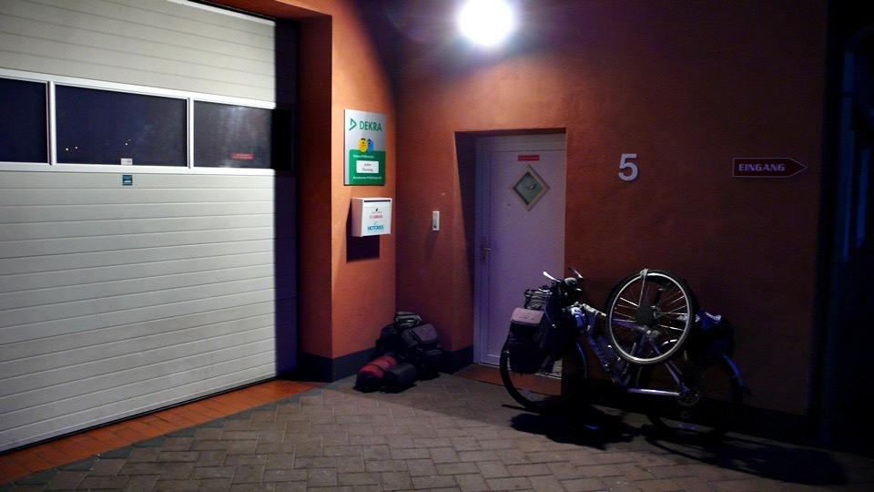
晚上睡在後面不引人注意的車庫入口，真是好加在睡一晚上都沒有被人趕走。
靜悄悄地睡覺，翻身動作都不敢太大，因為頭上那一盞燈是感應式的，只要有人走近或是我的動作太大，就會突然碰～地亮起來。
漆黑的夜裡沒聽見雨聲，自己的呼吸聲則聽得很清楚，此刻我正躺在德國的土地上呼吸它的空氣，但抵達德國的真實感很細微。
不論身在何方、處於哪一個國家，我依然在異鄉流浪，往回家的路上又更近了一點。
繼續閱讀：9.2 有靈魂的人們
歐洲-歐元－ 1：45 台幣
9.1
總計：3.8元
花光所有的茲羅提買了一袋的番茄跟一袋的蘋果14.5茲羅提，折合歐元3.8元